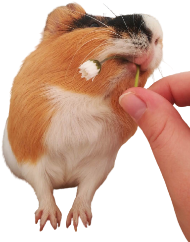

Let's start with a Kiki !

Kikis are lovely but ungrateful creatures.
They spend their time being nasty, looking cute, and sleeping.
Guinea pigs communicate through a series of squeaks, chirps and purrs.
When excited guinea pigs may repeatedly perform little hops in the air, also known as “popcorning”.